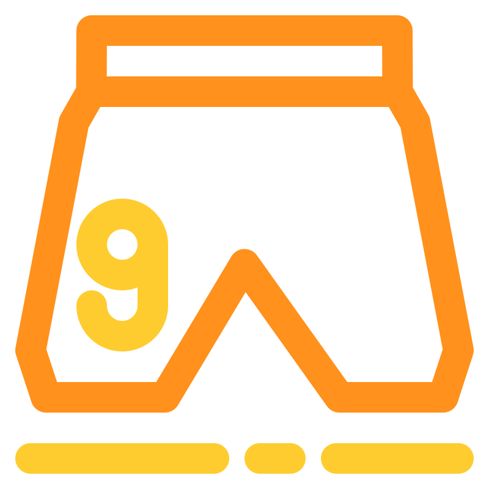
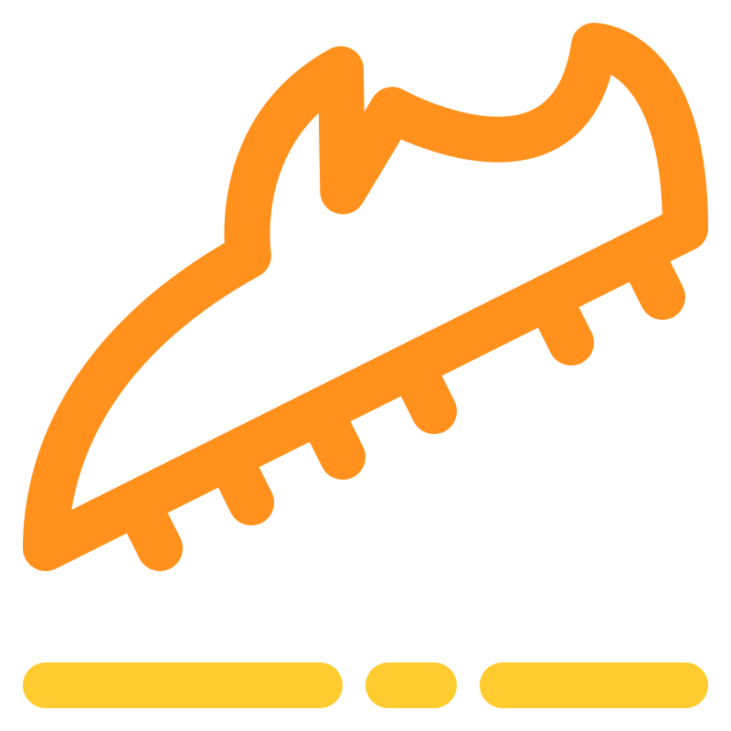

Nasza Misja
Chcemy, aby każdy kibic mógł poczuć dumę reprezentując swój ukochany zespół. Nie ważne czy szukasz klasyka z finału Ligi Mistrzów z 1999 roku, czy najnowszego trykotu reprezentacji – u nas znajdziesz to, co rozpala piłkarskie serca.


Szeroki Wybór
Setki unikalnych modeli z różnych lig świata, od Premier League po egzotyczne ligi Ameryki Południowej.

Klimat Mundialu
Specjalne sekcje dedykowane historycznym turniejom Mistrzostw Świata oraz Mistrzostw Europy.
Edycje Specjalne
Dostęp do rzadkich wydań rocznicowych i limitowanych dropów, które trudno znaleźć gdziekolwiek indziej.

Prawdziwi Zwycięzcy
Koszulek używanych przez mistrzów – poczuj magię trykotów, w których wznoszono najważniejsze trofea.
Certyfikaty Jakości
Gwarantujemy najwyższą klasę odwzorowania materiałów, haftów oraz oryginalnych naszywek federacyjnych.

Ikony Gwiazd
Znajdź koszulki z nazwiskami takich legend jak Zidane, Ronaldinho, Henry, czy współczesnych herosów murawy.

Pełne Komplety
Oferujemy również spodenki i getry do wybranych modeli, abyś mógł skompletować pełny strój meczowy.

Buty i Akcesoria
Uzupełnij swój styl o unikalne dodatki piłkarskie inspirowane kulturą stadionową i stylem streetwear.

Strefa Bramkarza
Wyjątkowe, wzorzyste bluzy bramkarskie z lat 90. dla koneserów najbardziej ekscentrycznych strojów.
.svg) Assortment of football shirts
Assortment of football shirts